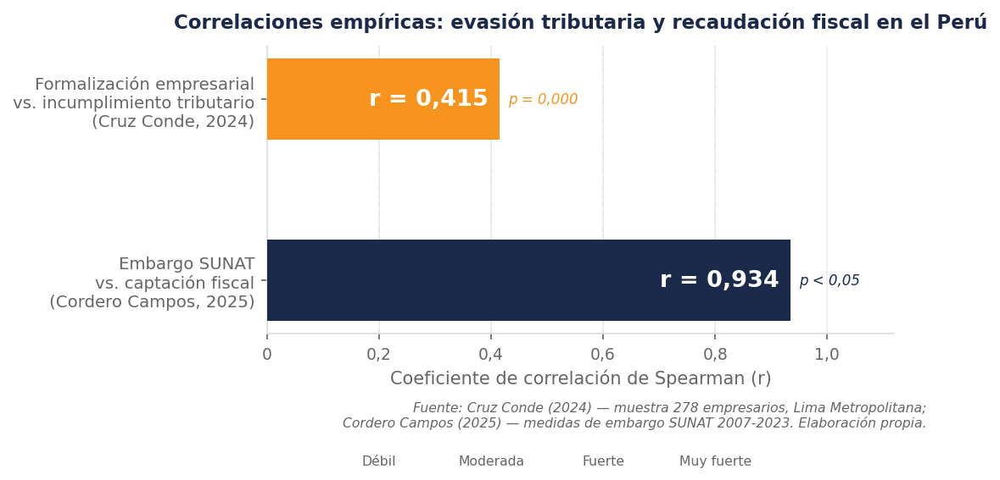

La omisión fiscal no mantiene con la recaudación una simple correlación estadística, sino una relación causal: a mayor incumplimiento tributario, menores son los recursos disponibles para el financiamiento del gasto público.

Dicho hallazgo indica que los avances en formalización amplían la base imponible y, por tanto, incrementan los ingresos tributarios disponibles para el Estado (Cruz Conde, 2024). En esa misma dirección, las medidas de embargo de la SUNAT muestran una correlación muy fuerte con la captación fiscal (r = 0,934, p < 0,05), lo que confirma que la cobranza coactiva es un factor determinante en la recaudación; además, los regímenes tributarios diferenciados condicionan la efectividad de estas acciones según el sector del contribuyente (Cordero Campos, 2025).
De este modo, la informalidad empresarial amplía la brecha entre lo que el Estado debería captar y lo que efectivamente recauda, mientras que la formalización progresiva permite revertir esa tendencia (Cruz Conde, 2024).
En síntesis, la evidencia empírica confirma que el incumplimiento tributario y la informalidad se potencian mutuamente y erosionan de forma sistemática la base imponible del Estado.